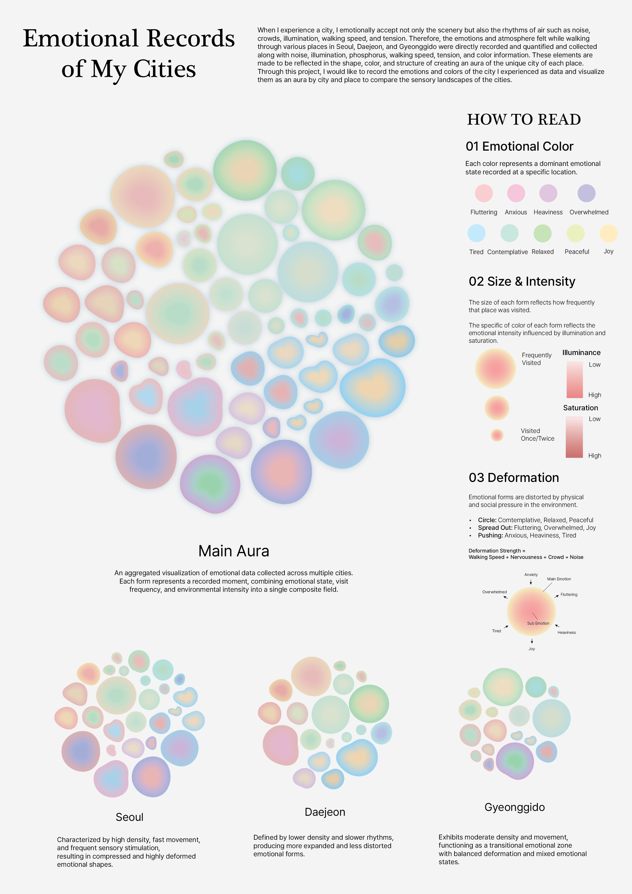

I design systems and interactions that connect technology,
people, and everyday experiences.
Experience
KAIST Industrial Design (2024– )
Academic & Culture Director, ID Student Association
Deputy Planning Director, KAIST Festival Committee
Interests
Interaction & System Design
Data-driven Design
Physical Computing
Time Capsule
2024 · Interaction Design

City Aura
2023 · Information Design
Into Twelve Records of Ordinary Autumn
Information Design · 2025
Time Capsule is an interactive object that allows users to revisit
personal memories by selecting a specific year.
Through physical interaction, sound, and printed images, the project
explores how technology can evoke emotional connections to the past.
The project focuses on designing a system that bridges digital data
and tangible experience, emphasizing reflection, slowness,
and personal storytelling.